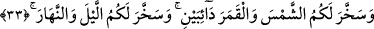

nehirleridir. Allah onları cennet pınarlarının (sâdece) bir tânesinden çıkarmıştır. Onları
dağlara yerleştirmiş, yeryüzüne akıtmış ve insanların emrine âmâde kılmıştır.
Hayatlarını sürdürürken ihtiyaç duydukları türlü faydaları bunlara koymuştur. Öteki
ırmaklar bunlara tâbidir, bunlar ise onların aslı mesâbesindedir.
33. Düzenli seyreden güneşi ve ayı size faydalı kıldı; geceyi ve gündüzü de
istifâdenize verdi.
“Düzenli seyreden güneşi ve ayı size faydalı kıldı” yâni, kıyâmete kadar hiçbir inkıtâ
olmadan devamlı ve kesintisiz hareket eden veya seyir, aydınlatma, karanlıkları bertaraf
etme ve fayda sağlama konusunda gayret ve çaba gösteren “güneşi ve ayı size faydalı
kıldı” emrinize âmâde yaptı.
Güneş ve ay, yeryüzünü, bedenleri ve bitkileri hiç ara vermeden ıslâh eder, onların
yararına hareket ederler. Güneş, aydan daha üstündür. Çünkü güneş, gezegen ve
yıldızlardan meydana gelen gök cisimlerinin ışıklarının aslı ve kaynağıdır. Ayrıca bu
cisimlerin ışıkları, güneşe karşı olma durumlarına ve cisimlerinin saflığına göre güneşin
ışığından alınmıştır.
Geçiminizi sağlamanız, uyumanız, meyvelerin olgunlaştırmak ve onları toplamanız
için “geceyi ve gündüzü de istifâdenize verdi.” Gece ile gündüz artıp eksilmek,
aydınlatıp karartmak ve hareket edip sâkinleşmek sûretiyle birbirleri peşi sıra gelirler.
Gece ile gündüzden hangisinin daha üstün olduğu ihtilâflıdır. Bazıları der ki: Gece
gündüzün önüne alınmıştır. Çünkü gece Mevlâ’ya, gündüz ise insanlara hizmet içindir.
Peygamberlerin miraçları da gece meydana gelmiştir. Bu yüzden Nisâbûrî gecenin
gündüzden efdal olduğunu söylemiştir.
Fakir (Bursevî) der ki: Gece sükûn vaktidir. Onda ilâhî zât sırrı vardır. Bu yüzden en
yüce mertebe gecenindir. Gündüz ise hareket vaktidir. Onda ilâhî sıfatların sırrı vardır.
Bu
açıdan
en
büyük
fazîlet
gündüzündür.
Mertebelerin
başı
ve
sonu
sükûn/hareketsizliktir. Nitekim bir kudsî hadisteki Cenab-ı Hakk’ın şu sözü buna işâret
eder: “Ben gizli bir hazîne iken, tanınmayı sevdim ve mahlûkâtı yarattım.”[30]
Yaratmak, mânevî hareketi gerektirir. Hareket ve yaratmadan önce ise tam bir sükûn ve
zât-ı baht/sırf zât vardır. İyi anla.
Günlerin efendisi cumâdır. Arefe günü cumaya rastladığı zaman o seneki hac böyle
olmayan yetmiş hacca bedel olur. Böylece cumanın arefeden üstün olduğu da ortaya
çıkmaktadır. Gecelerin en üstünü ise Peygamber Efendimiz (a.s.)’ın doğduğu gecedir. O
olmasaydı ne Kur’ân nâzil olurdu ne de Kadir gecesi bilinirdi. En doğru görüş budur.